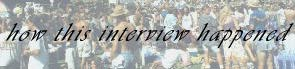
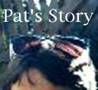
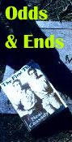

A Note From Los Gatos
In August 1995 I began corresponding via e-mail with John Cassady, the son
of late Beat hero Neal Cassady. John still lives and works in the vicinity of
Los Gatos, the legendary homestead of the Cassady family. He has not spoken
much in public about the legacy of his father or his own unusual upbringing,
and after exchanging several e-mails we agreed to conduct an in-depth
interview. This is a record of the entire correspondence.



Literary Kicks
by
Levi Asher